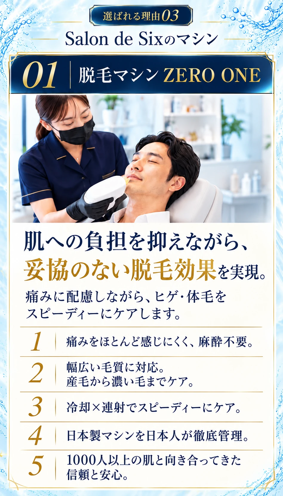
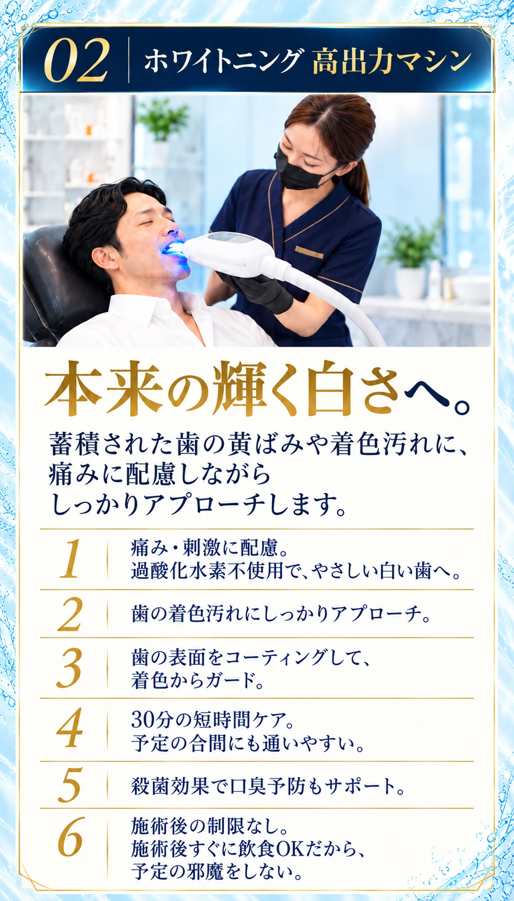
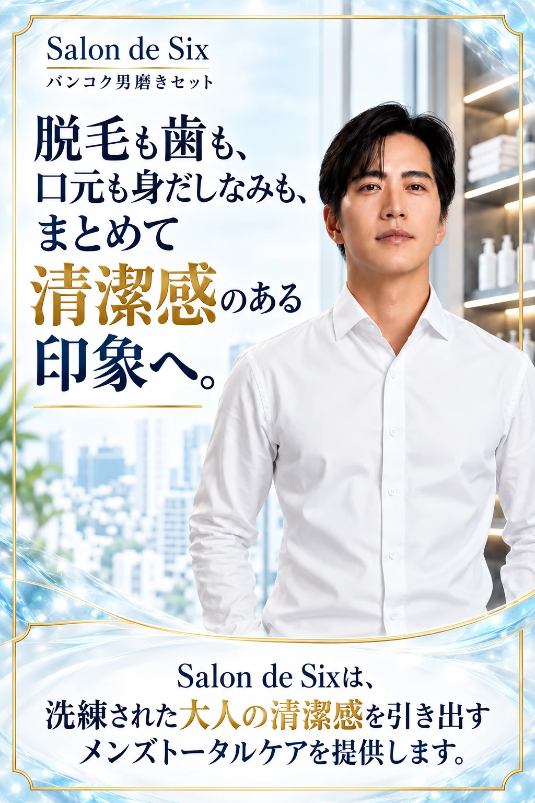
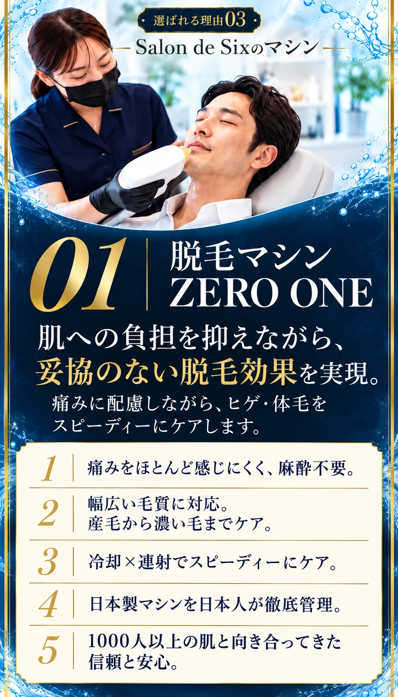
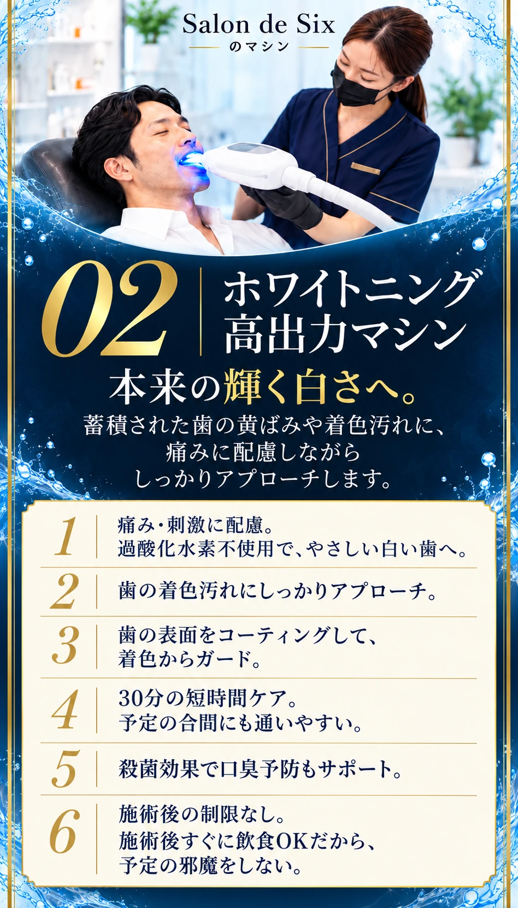
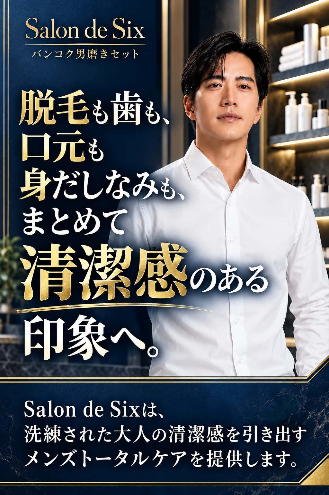
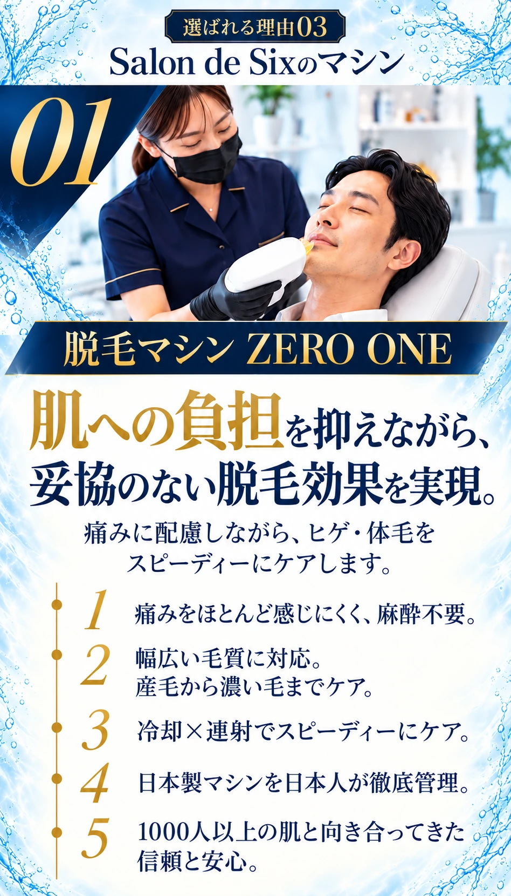
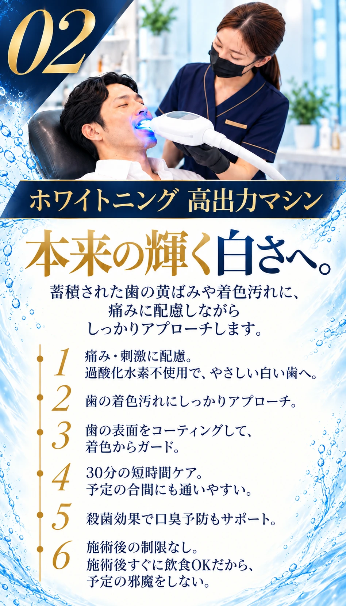
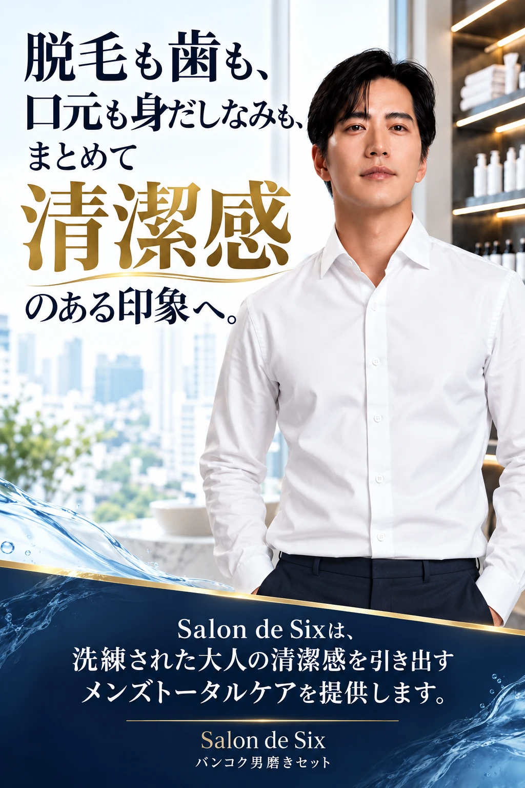

明るく上品
写真 → 大きなコピー → 特徴。白と水色を活かし、読みやすさを優先。



SALON DE SIX / DESIGN COMPARISON
マシン紹介と、男性写真を使った締めのデザインです。別々の案を組み合わせても選べます。
写真 → 大きなコピー → 特徴。白と水色を活かし、読みやすさを優先。



濃い紺に白と金の文字。深みのある色で、サロンの上質さを強調。



大きな写真とメリハリのあるコピーで、印象に残る見せ方。


